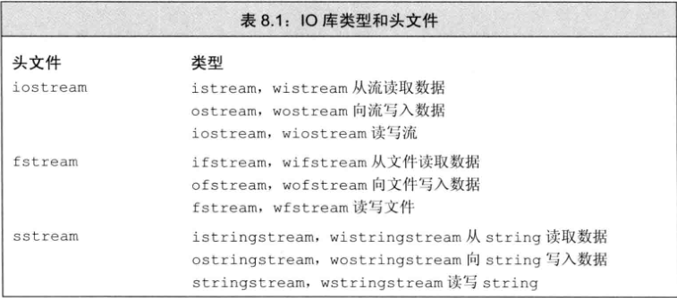
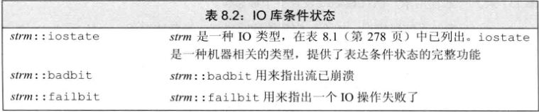
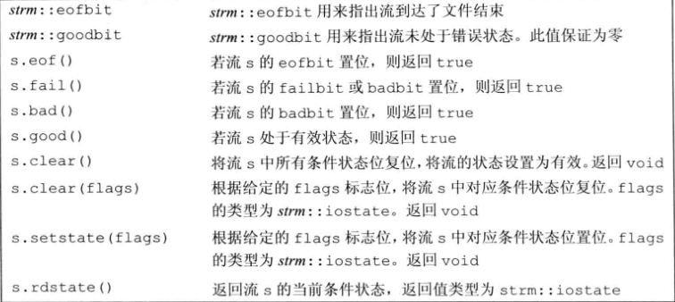
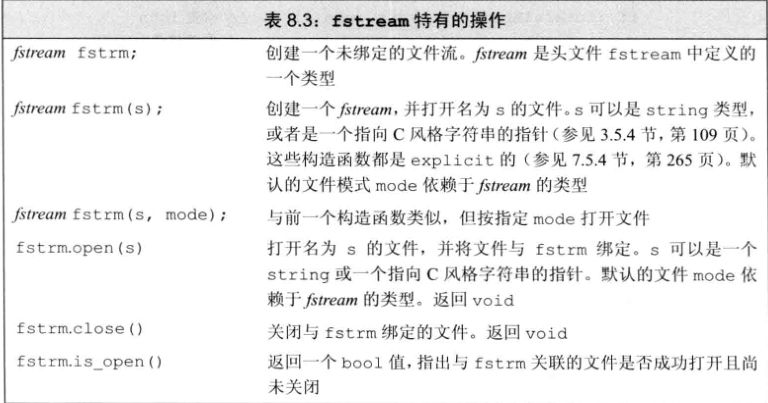
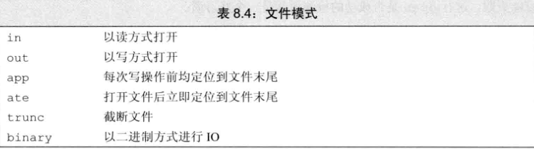
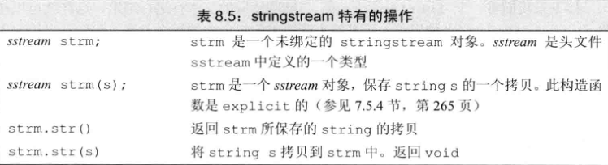

C++语言不直接处理输入输出，而是通过一组定义在标准库中的类型来处理IO。
IO库定义了读写内置类型值的操作。
8.1 IO类
iostream定义了用于读写流的基本类型
fstream定义了读写命名文件的类型
sstream定义了读写内层string对象的类型

为了支持使用宽字符的语言，标准库定义了一组类型和对象来操纵 wchar_t 类型的数据，宽字符版本的类型和函数的名字以一个w开始。
标准库通过继承机制，使我们能忽略不同类型的流之间的差异。
8.1.1 IO对象无拷贝或赋值
不能将形参或返回类型设置为流类型。
进行IO操作的函数通常以引用方式传递和返回流。读写一个IO对象会改变其状态，因此传递和返回的引用不能是const的。
8.1.2 条件状态
IO操作可能发生错误，IO类定义了一些函数和标志，帮助我们访问和操纵流的条件状态。

一个流一旦发生错误，其后续的IO操纵都会失败。只有当一个流处于无措状态时，我们才可以从它读取数据，向它写入数据。
由于流可能处于错误状态，代码通常需要在使用之前检查其状态：
|
将流作为条件使用，只能知道流是否有效，无法知道具体发生了什么。
IO库定义了一个机器无关的iostate类型提供表达流状态的完整功能，这个类型应作为一个位集合来使用。
IO库定义了4个iostate类型的constexpr值表示特定的位模式：
-
badbit：表示系统级错误，如不可回复的读写错误 -
failbit：发生可恢复错误时被置位，如期望读取数值却读出一个字符等。这种问题是可以修正的，流还可以继续使用 -
eofbit和failbit：到达文件结束位置时被置位 -
goodbit：流未发生错误时，值为0
badbit、failbit、eofbit任一个被置位，则检测流状态的条件会失败。
8.1.3 管理输出缓冲
每个输出流都管理一个缓冲区，用了保存程序读写的数据。
有了缓冲机制，操作系统就可以将程序的多个输出操作组合成单一的系统级写操作。由于设备的写操作可能很耗时，允许操作系统将多个输出操作组合为单一的设备写操作可以带来很大的性能提升。
导致缓冲刷新（即，数据真正写的输出设备或文件）的原因有很多：
- 程序正常结束，作为main函数的return操作的一部分，缓冲刷新被执行
- 缓冲区满时，需要刷新缓冲
- 使用操纵符如endl显示刷新缓冲区
- 在每个输出操作之后，可以用操纵符unitbuf设置流的内部状态，来清空缓冲区。默认情况下对cerr是设置unitbuf的。
- 一个输出流可能被关联到另一个流，在这种情况下，当读写被关联的流时，关联到的流的缓冲区会被刷新。默认情况下，cin和cerr都关联到cout，因此读cin或写cerr都会导致cout的缓冲区被刷新。
刷新输出缓冲区：
- endl：完成换行并刷新缓冲区的工作
- flush：刷新缓冲区，但不输出任何额外的字符
- ends：像缓冲区插入一个空字符，然后刷新缓冲区
如果想在每次输出操作后都刷新缓冲区，可以使用unitbuf操纵符，它告诉流在接下来的每次写操作之后都进行一次flush操纵。而nounitbuf操纵符则重置流，使其恢复使用正常的系统管理的缓冲区刷新机制。
如果程序异常终止，输出缓冲区是不会被刷新的。当调试一个已经奔溃的程序时，需要确认那些你认为已经输出的数据确实已经刷新了，否则可能会浪费大量时间在追踪代码为什么没有执行上。
当一个输入流被关联到一个输出流时，任何试图从输入流读取数据的操作都会先刷新关联的输出流。
标准库将cout和cin关联在一起。交互式系统通常应该关联输入流和输出流，这意味着所有输出，包括用户提示信息，都会在读操作之前被打印出来。
tie有两个重载版本：
- 不带参数：返回指向输出流的指针
- 如果本对象当前关联了一个输出流，则返回这个输出流的指针
- 如果本对象未关联，则返回空指针
- 带参数：接受一个指向ostream的指针，将自己关联到此ostream。
可以将一个istream对象关联到一个ostream，也可以将一个ostream关联到另一个ostream。
|
8.2 文件输入输出
头文件fstream定义了三个类型支持文件IO：
-
ifstream：从一个给定文件读取数据 -
ofstream：向一个给定文件写入数据 -
fstream：可以读写给定文件
fstream继承了来自iostream的操作，还定义了特有的操作。

在新C++标准中，文件名既可以是库类型string对象，也可以是C风格字符数组。旧版本只允许C风格字符数组。
在要求使用基类型对象的地方，可以用继承类型的对象来代替，因此可以用fstream代替iostream&，ofstream代替ostream&，ifstream代替istream&。
如果定义了一个空文件流对象，可以随后调用open来将它与文件关联起来。如果open失败，failbit会被置位。如果open成功，则open会设置流的状态使得good()返回true。
因为调用open可能会失败，所以检测是否open成功是一个好习惯。
对一个已经打开的文件流调用open会失败，并导致failbit被置位，随后的试图使用文件流的操作都会失败。要将打开的文件流关联到另外一个文件，必须先用close()关闭文件。
fstream会自动构造和析构，当一个ifstream对象被销毁时，close会自动被调用。
每个流都有一个关联的文件模式，用来指出如何使用文件。

指定文件模式有如下限制：
- 只可以对ofstream或fstream对象设定out模式
- 只可以对ifstream或fstream对象设定in模式
- 只有out也被设定时才可设定trunc模式
- 只要trunc没被设定，就可以设定app模式。在app模式下，即使没有显示指定out模式，文件也总是以输出方式被打开
- 默认情况下，即使没有指定trunc，以out模式打开的文件也会被截断。为保留以out模式打开的文件内容，必须同时指定app模式，这样会将数据追加到文件末尾；或者同时指定in模式，即打开文件同时读写操作
- ate和binary模式可用于任何类型的文件流对象，且可以与其它任何文件模式组合使用
每个文件流类型都定义了一个默认的文件模式，当未指定时使用默认模式：
- ifstream：in模式
- ofstream：out模式
- fstream：in和out模式
|
每次调用open时都会确定文件模式。每次打开文件时，都要设置文件模式，可能是显示地设置，也可能是隐式地设置。当程序未指定模式时，就使用默认值。
8.3 string流
sstream头文件定义了三个类型支持内存IO：
-
istringstream：从string读取数据 -
ostringstream：向string写入数据 -
stringstream：既可从string读数据也可以向string写数据
头文件sstream中定义的类型都继承自iostream头文件中定义的类型，除了继承得来的操作外，还有特有的操作。

使用istringstream的例子：
|
使用ostringstream的例子（输出有效号码到文件，打印无效号码的相关信息）：
|